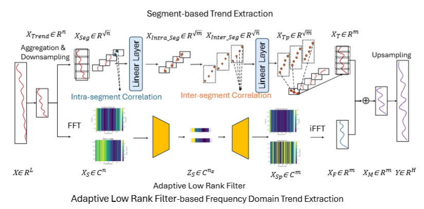
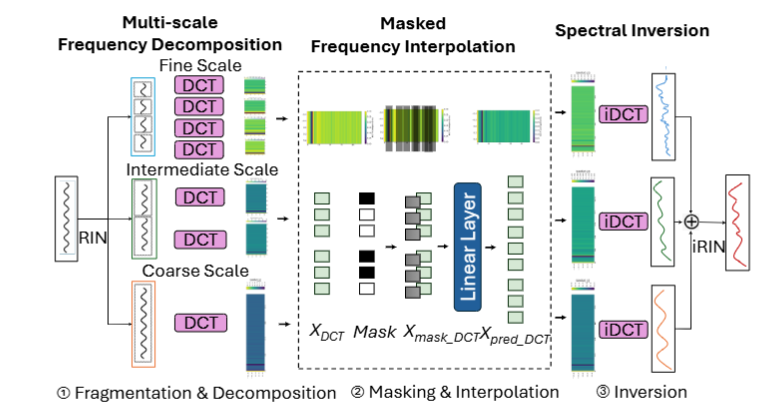
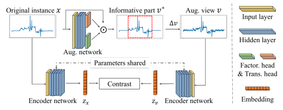
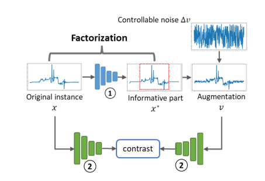
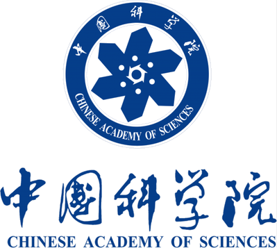

Time Series · Efficient Deep Learning
Aitian Ma Building small, fast, and reliable models for time series.
On the academic & industry job market, 2026–2027I am a Ph.D. candidate in Computer Science at Florida International University, advised by Dr. Mo Sha and co-advised on AI research by Dr. Dongsheng Luo. My research is on time series modeling: how to forecast and represent temporal data accurately with a fraction of the parameters, data, and energy that current models demand.
Research Interests
- Time Series Forecasting — lightweight architectures, frequency-domain modeling, long-horizon accuracy
- Time Series Representation Learning — contrastive learning, learnable and adaptive augmentation
- Resource-Efficient & Edge Deployment — sub-kilobyte models, on-device inference, energy-aware training
- Time Series for AIoT — sensing, domain adaptation, and reliable wireless systems
Selected Papers
Time series work

MixLinear: Extreme Low-Resource Multivariate Time Series Forecasting with 0.1K Parameters
Long-term forecasting models keep growing while the devices that need them keep shrinking. MixLinear models temporal dependencies in the time domain and inter-variate correlations in the frequency domain, compressing the parameter budget to 0.1K — orders of magnitude smaller than comparable forecasters — while matching their accuracy.


MMFNet: Multi-Scale Frequency Masking Neural Network for Multivariate Time Series Forecasting
Long-term forecasting fails in characteristic ways when fine-grained temporal structure is averaged away. MMFNet captures patterns at multiple scales simultaneously and applies learnable masking in the frequency domain to suppress the components that do not carry signal, improving long-horizon accuracy over strong time-domain baselines.

Parametric Augmentation for Time Series Contrastive Learning
Contrastive learning for time series lives or dies on its augmentations, which are usually picked by hand and by dataset. We analyze what makes a good time series augmentation through an information-theoretic lens and learn the augmentation parameters directly, producing representations that transfer across forecasting and classification benchmarks.

AutoTCL: Automated Time Series Contrastive Learning with Adaptive Augmentations
AutoTCL removes the augmentation search from the practitioner's hands entirely: the augmentation policy is learned jointly with the encoder and adapts per dataset, so a single pipeline works across heterogeneous time series without per-domain tuning.
Full Publication List
* equal contributionShow all 14 publications Hide full list
Journal Articles
-
Configuring Industrial Wireless Mesh Networks via Multi-Source Domain Adaptation and Feature MaskingACM Transactions on Sensor Networks (TOSN), accepted June 2026
-
IEEE/ACM Transactions on Networking, vol. 32, no. 3, pp. 1983–1998, June 2024
-
Sensorless Air Temperature Sensing Using LoRa Link CharacteristicsACM Transactions on Sensor Networks (TOSN), under review
Conference & Workshop Papers
-
International Conference on Learning Representations (ICLR), 2026
-
41st ACM/SIGAPP Symposium on Applied Computing (SAC’26)
-
22nd International Conference on Distributed Computing in Smart Systems and the Internet of Things (DCOSS-IoT), 2026
-
IEEE ICMLA, Special Session on Deep Learning and Applications, December 2025
-
IEEE DCOSS-IoT, June 2025
-
IEEE MetroLivEnv, June 2025
-
40th ACM/SIGAPP Symposium on Applied Computing (SAC’25)
-
International Conference on Learning Representations (ICLR), May 2024
-
Enabling Reliable Environmental Sensing with LoRa, Energy Harvesting, and Domain AdaptationIEEE ICCCN, July 2024
-
AI4TS Workshop, August 2023
Under Review
-
LLM-Based Noise-Aware Domain Adaptation Agent for Industrial Wireless Mesh Network ConfigurationUnder review
* Equal / co-first authorship.
Education
Ph.D. in Computer Science
Florida International University
2022 – Expected December 2026
Knight Foundation School of Computing and Information Sciences. Advised by Dr. Mo Sha; AI research co-advised by Dr. Dongsheng Luo.
M.S.
Beijing University of Technology
Beijing, China.
Experience
Graduate Research Assistant
Florida International University
2022 – Present
Knight Foundation School of Computing and Information Sciences. Time series forecasting and representation learning, and their deployment on resource-constrained sensing systems.

System Administrator & Instructor
Chinese Academy of Sciences, Beijing
2013 – 2021
Mentors: Daniel Dajun Zeng, Yihua Du. Taught the Big Data Platform Workshop and computer networking curriculum (2015–2019).
Software Engineer Intern
Ericsson China, Beijing R&D Center
Summer 2012
Mentor: Ge Jiang.
Awards & Honors
- 2025 Young Gladiators Fellowship — Northeastern University
- 2025 Best Paper Award Nominee — IEEE DCOSS-IoT
- 2025 FIU UGS Travel Award — Academy of Science, Engineering, and Medicine of Florida (ASEMFL) Annual Conference
- 2023 Best Paper Award — AI4TS Workshop
Teaching & Mentoring
Florida International UniversityTeaching Assistant
| Course | Title | Semester |
|---|---|---|
| COP 4338 | Programming III | Fall 2024 |
| COP 5522 | Parallel and Distributed Computing | Spring 2024 |
| COP 4710 | Database Management | Fall 2023 |
| CEN 4010 | Software Engineering | Spring 2023 |
| COP 4610 | Operating Systems | Fall 2022 |
Research Mentoring
- REU Student Mentor, 2022–2025 — mentored 10+ undergraduate students
- Instructor, Chinese Academy of Sciences, 2015–2019 — Big Data Platform Workshop & computer networking curriculum
Professional Service
Conference Reviewer
Journal Reviewer
Contact
I am on the job market for the 2026–2027 cycle, looking for faculty and research scientist roles in time series modeling and efficient machine learning. I am always glad to hear from people working on related problems — please reach out.